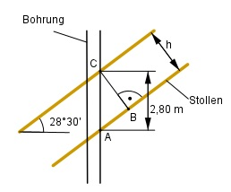

Aufgabe 125 Ein unter 28°30' verlaufender Stollen in einem Steinkohlebergwerk wird senkrecht angebohrt. Seine scheinbare Höhe beträgt 2,8 m. Wie hoch ist seine wirkliche Höhe h?

Im Dreieck ABC: 30 30’ = ----° = 0,5° 60 Winkel bei A = (90° - 28,5°) = 61,5° h sin 61,5° = --------- | *2,8 m 2,8 m h = sin 61,5° * 2,8 m = 0,8788 * 2,8 m = 2,5 m